أحدث الأخبار
- باولو يقود هجوم الزمالك أمام رينجرز في دوري الأبطال
- المالية تعفي المطاعم غير السياحية من ضريبة القيمة المضافة بشروط
- "القضاء الإداري" يلزم الجامعة الأمريكية بتحصيل مصروفاتها بالجنيه المصري
- البورصة ترتفع بنسبة 0.52% في نهاية التعاملات
- إعادة فتح موانىء السويس بعد تحسن الأحوال الجوية
- محام: حفظ التحقيقات مع منى مينا في اتهامها بنشر أخبار كاذبة
- نجوى سالم .. كوميديانة انتهت حياتها بمأساة
- الأرصاد: طقس مائل للدفء الاثنين.. والعظمى في القاهرة 22
رأساً على عقب.. ضحايا وجرحى الثورة في مصر وتونس من الوعود البراقة إلى زوايا النسيان
جانب من اشتباكات بوسط القاهرة في 25 يناير 2015 - رويترز.
محمد قرني من مصر وخالد بن نجمة من تونس أصيب كلاهما بالشلل النصفي، وأصبحا اليوم عاجزين عن الحركة، بعدما تضاعفت إصابتهما بطلقات نارية أطلقها رجال أمن على متظاهرين سلميين ومنهم قرني وبن نجمة عام 2011.
اختلف البلدان الرائدان في انتفاضات الربيع العربي جغرافياً، لكنهما تشابها من حيث النكسة التي عاناها الجيل الأول من ضحايا وجرحى الثورة، فبعد أن كانوا أيقونات يقف المسؤولون والمدنيون أمامهم بإجلال مقدمين وعود الوفاء، تحولوا اليوم إلى مادة للدعاية الإعلامية والتلاعب وبيع الكلام.
من شارع الحبيب بورقيبة في تونس انطلقت الهتافات يوم 14 يناير، ومن ميدان التحرير في مصر انطلقت في 25 يناير العام 2011، توحدت مطالب الشعبين في العيش والحرية والعدالة الاجتماعية، لكن بعد مضي خمس سنوات على ثورة تونس ومصر وعلى من ضحوا بأرواحهم، توحدت أيضا المواقف الرسمية للدولتين وتلاشت الوعود البراقة بعدما انقلب الحال رأساً على عقب.
شارع الحبيب بورقيبة 14 يناير 2011
سعادة عبد القادر من مصر، ونجوى الهمامي من تونس تقصى كل منّا في بلده وعلى مدار أربعة أشهر انتهاك جهات حكومية (المجلس القومي لرعاية المصابين وأسر شهداء الثورة التابع لمجلس الوزراء المصري- وفي تونس الهيئة العامة لشهداء وجرحى الثورة) للحقوق المادية والخدمية والمعنوية لمصابي وأسر شهداء الثورتين، وغياب الرقابة الذي أتاح لمنتحلي صفة "مصابين" السطو على حقوق المستحقين من جرحى الثورة الحقيقيين.
وتوصلنا إلى أدلة عدة تثبت إهمالاً متعمداً للملف في ظل وجع استوطن قلوب أهالي الضحايا.
العَدد والخدمات
في مصر، بلغ عدد المصابين 6312 بينهم 65 حالة ساءت إصابتهم وتحولت إلى شلل رباعي، فيما بلغ عدد الشهداء 840 شهيداً بحسب المجلس القومي، غير أن قائمة المصابين والشهداء في تونس لم تر النور بعد لعدم إعلان الهيئة العامة أي أعداد رسمية أو غير رسمية للمصابين والشهداء، نظراً لوجود قوائم وهمية حصل المدرجون بها على مستحقات بدون وجه حق.

الخدمات التى تقدمها حكومة تونس ومصر للمصابين وأسر الشهداء
تشير البيانات الرسمية للمجلس القومي إلى أن أسر الشهداء في مصر حصلت على مستحقاتهم، وأن غالبية المصابين خضعوا للرعاية وتنعموا بالخدمات. لكن لماذا إذن بعد مضي خمس سنوات يتصاعد الحنق والغضب والغبن؟
الوضع الراهن
الحالة المزرية التي وجدنا عليها محمد قرني المصاب بشلل نصفي جراء طلقتين ناريتين يوم جمعة الغضب بميدان الأربعين- محافظة السويس تخالف ما أشارت إليه بيانات المجلس.
"أنا المجلس ما جابش ليا حتى كرسي متحرك يساعدني على التنقل والكرسي ده جابتهولي جمعية خيرية" تلك الجملة التي بدأ بها قرني حديثة تنسحب أيضاً على 20 حالة شلل قمنا بزيارتها من أصل 65 حالة هي إجمالي المصابين بالشلل الرباعي.
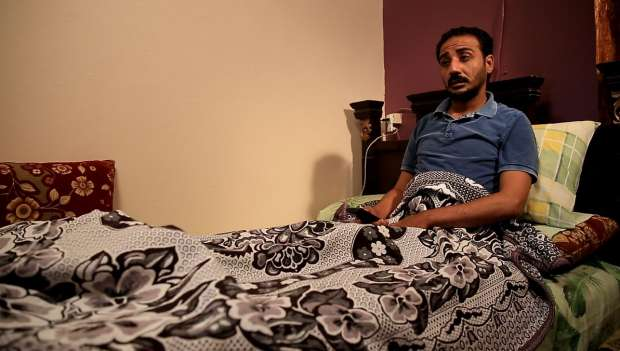
محمد قرني مصاب ثورة بشلل نصفي
ويضيف قرني أنه على الرغم من أن حالته تستدعي بحسب أطباء عرض نفسه عليهم، السفر إلى ألمانيا لإجراء جراحة بالنخاع الشوكي، إلا أن المجلس القومي رفض وأبلغه أن حالته ليس لها علاج.
ويقول قرني إنه بعد محاولات عدة والتردد على المجلس القومي لطلب السفر من أجل الجراحة بألمانيا، قام المجلس بتسفيره إلى سويسرا لعلاجه من قرح الفراش وليس إجراء عملية النخاع، رغم أن علاج قرح الفراش متوفر في مصر.
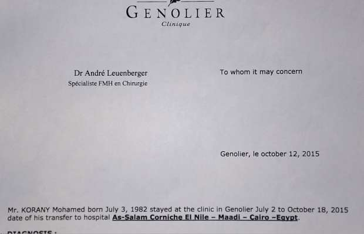
تقرير طبي أثناء علاج قرني من القرح في سويسرا
مصابو ثورة تونس لم يكن حالهم أحسن من مصابي الثورة المصرية، فخالد بن نجمة الذي أصيب يوم 15 يناير 2011 بكسر في العمود الفقري، أجرى تسع عمليات جراحية على نفقته حتى أصبح قعيد الفراش نتيجةً للإهمال، إذ تحولت إصابته إلى شلل نصفي بعدما كان يتحرك جزئياً.
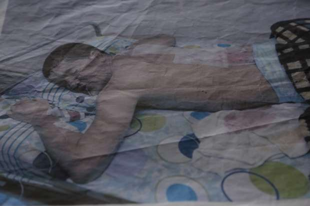
خالد بن نجمة تونسي مصاب بشلل نصفي
يقول بن نجمة الذي يسكن في منطقة بنزرت في تونس "جسمي تعفن من الإهمال". ويتهم الهيئة العامة بأنها أهملت علاجه على مدى خمس سنوات بعدما طلب منها السفر أكثر من مرة للعلاج خارج تونس، ووعدته الهيئة بالسفر لكنها لم تنفذ وعدها حتى اليوم.
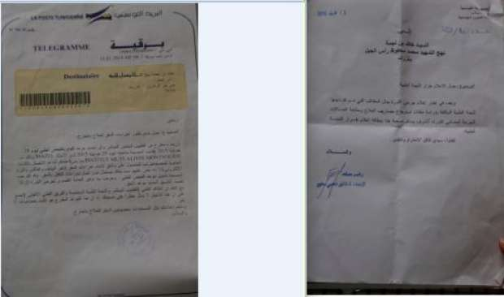
تقريرين للحالة الصحية لخالد بن نجمة
ولدى مواجهة مجدولين الشارني رئيسة الهيئة العامة لشهداء وجرحى الثورة بتونس بحالة خالد بن نجمة، قالت إن والدته هي من رفضت إعطاء الهيئة الباسبور (جواز السفر) الخاص بخالد تمهيداً لتجهيز ملفه للسفر من أجل العلاج أما فيما يخص التمتع بالمسكن فالوالدة –حسب ما صرحت به محدثتنا –اختارت منزلا في منطقة راس الجبل بمحافظة بنزرت لكن عند توقيع العقد رفض صاحب المنزل بيعه وطلب أضعاف المبلغ المكتوب في العقد.
وتضيف مجدولين أن الهيئة لم تخلف بوعودها لكنها تجد صعوبة في التعامل مع المصابين لأنهم لا يلتزمون بمواعيد الفحوص الطبية فهم يتغيبون عمدا ولا يلتزمون بالأدوية التي تصفها لهم اللجنة الطبية.
محمد قرني وخالد بن نجمة ليسا إلا حالتين من بين مئات المصابين بإصابات مختلفة أهملها المجلس القومي في مصر وهيئة شهداء وجرحى الثورة في تونس.
الأمر لا يختلف كثيراً حين التقينا بعائلات فقدت أبناءها وحرمت من أبسط حقوقها، فوالدة الشهيد مصطفى رجب أول شهيد بالثورة المصرية سقط يوم 25 يناير بحي الأربعين في مدينة السويس، تقول إنها لم تحصل على أي مستحقات من المجلس القومي ولا حتى على كارنيه (بطاقة) باسم الشهيد مثلما حصلت عليه عائلات شهداء آخرين خارج محافظتها.
"أنا بغسل كلى ومستحقية علاج واسمنا متسجل بالمجلس، لكن ما بنخدش منه علاج ولا أي خدمات تانيه ومفيش حد بيتصل بينا"، بهذه الجملة تؤكد أم مصطفى أن المجلس القومي لا يقوم بدوره لتأدية الخدمات المطلوبة منه، وحين يستفسرون عن خدمات المجلس لرعايتنا يكون الرد من موظفي المجلس"هنشوف ونراجع الملف ونتصل بيكوا".
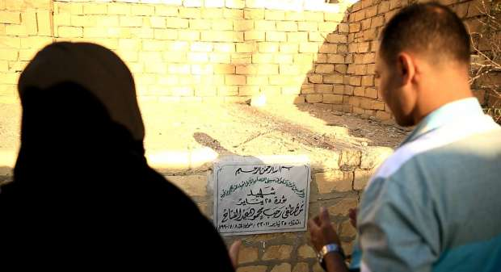
والدة مصطفي رجب وزوج شقيقته يقرأون الفاتحة
تؤكد أم مصطفى أنها حصلت على مبلغ مالي من جهة غير مسؤولة عن رعاية الشهداء وهي محافظة السويس، وحصلت أيضاً على وحدة سكنية من ذات الجهة بعد أن سددت ثمنها على أقساط.
سيد أبو بيه رئيس المجلس القومي لرعاية المصابين وأسر الشهداء، اكتفى بقوله فيما يخص أم الشهيد مصطفى إنها سيدة مُسنّة، ولم تتواصل مع المجلس لكونها مريضة طول الوقت، مضيفا "التقيت بها في عدة محافل بمبني محافظة السويس وأعرفها جيداً".
حالة شهيد من تونس
"لن أعيش في تونس بعد اليوم" كانت تلك آخر الكلمات التي قالها الشهيد وجدي السايحي قبل أن يستشهد يوم 14 جانفي (يناير)2011 حسبما أفاد شقيقه فتحي السايحي.
ويقول فتحي إنه وأسرته يعيشون ظروفاً مادية صعبة، لكن يرفض وبشدة أي مساعدات تقدمها الحكومة التونسية، "نحن لا ننتظر أن يموت وجدي حتى نأخذ المال ونصمت، نحن لا يهمنا المال ولم نستلم مليما واحدا ولن نفعل.. نحن نريد محاسبة من قتل أخي وجدي علنا أمام القضاء حتى يشفى غليلنا في فقدان رجل كان يحلم بعيش كريم في بلده ويشهد له الجميع بدماثة أخلاقه وحبه للناس".
الدستور
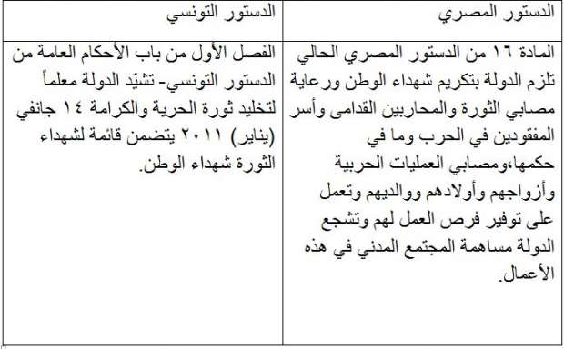
دستورا مصر وتونس
مصابون وشهداء وهميون
توصلنا أثناء البحث والتقصي إلى أن مصابين وهميين بتونس حصلوا على مبالغ مالية قدرها 3 آلاف دولار لكل فرد، وضعت في حساب بنكي خاص بكل منهم، وبالبحث عن الأسماء وجدنا أن 100 شخص من بين 681 مصابا حصلوا على الأموال رغم أنهم لم يشاركوا في الثورة ومنهم 15 ينتمون لعائلة واحدة.
ومن بين الأسماء التي بحثنا عنها مصاب وهمي حصل على مستحقات مالية بدون وجه حق أكثر من عشرين مرة فهو تمتع بمبلغ 3 آلاف دولار في تواريخ مختلفة رصدت له في حسابه البنكي حسب السجلات التي اطلعنا عليها من مركز المحافظة والمبين في القائمة.
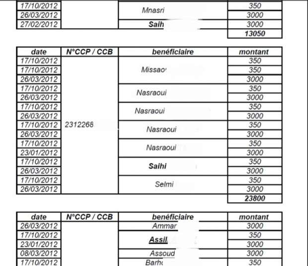
قائمة المصابين الوهمين والمبالغ التى تم صرفها لهم
ذهبنا لـ (أ.ع) لمواجهته بعد أن حصل على مستحقات أكثر من 20 مرة، فلم نجده ورفضت عائلته الرد بعد أن قطعنا مسافة خمس ساعات سفر من تونس للوصول إلى منزلة بمحافظة القصرين.
سعيد العيادي الناشط المدني التونسي، يقول إنه ومجموعة من المحامين قدموا للقضاء التونسي، ما يثبت أن هناك قائمة مصابين وهمية، ومن بينهم شخص يقيم في بلجيكا حصلوا على مستحقات المصابين بدون وجه حق.
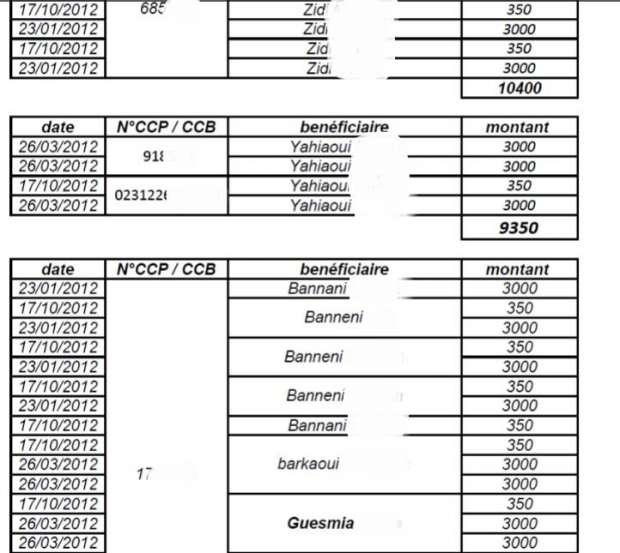
شخص صرف مبالغ ماليه أكثر من مرة
ويضيف العيادي أن القضاء أوقف موظفة بالهيئة العامة عن العمل بعدما ثبت أنها وضعت ضمن قائمة المصابين أسماء أقاربها.
والي (محافظ) القصرين الأسبق عاطف بو غطاس، أكد أن تقرير لجنة تقصي الحقائق عن مصابي الثورة وشهدائها بمنطقة القصرين، أثبت أن هناك خمسة شهداء مزورين و681 مصاباً وهميا، حصلوا على تقارير طبية مقابل دفع رشى، وسجلوا أنفسهم كمصابي ثورة وحصلوا على تعويضات.
يضيف بو غطاس أن إجمالي التعويضات التي صرفت للمصابين والشهداء الوهميين بمحافظة القصرين فقط نحو 8 ملايين دينار(4 ملايين دولار).
الرد الحكومي
وفي مواجهة مع رئيسة الهيئة العامة لهيئة شهداء وجرحى الثورة في تونس للرد على القائمة الوهمية للمصابين، وحصولهم على تعويضات بدون وجه حق، لم تنكر ذلك، وقالت "لدي علم بالقائمة ونعمل عليها الآن"
رئيسة الهيئة توعدت كل من حصل على تعويض بغير وجه حق، بالمحاسبة لأن ذلك يعد إهداراً لمال الدولة وتزييفاً لتاريخ الثورة.
وعلى الرغم من أن الهيئة العامة في تونس، لم تعلن حتى الآن أعداد المصابين والشهداء، إلّا أن رئيسة الهيئة كشفت أن إجمالي حجم التعويضات الذي تم صرفه بلغ 80 مليون دينار (40 مليون دولار) حتى الآن.
مدعو إصابة
ومن تونس إلى مصر يتكرر الأمر ذاته، بعد أن كشفنا من خلال البحث والتقصي أن هناك مئات من مدعي الإصابة التقينا 20 منهم سجلوا أنفسهم بالمجلس القومي على أنهم مصابو ثورة بتقارير طبية لحوادث بمشاجرات وغيرها.
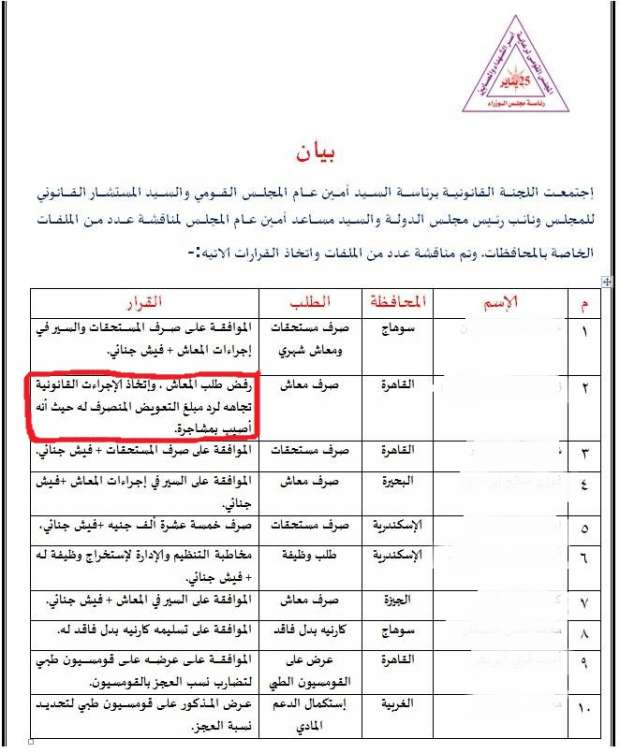
مدعي إصابة صرف مبالغ مالية
بعد الحصول على نسخة من تقريره الطبي الذي سجل به نفسه فى المجلس القومي كمصاب ثورة على الرغم من أن التقرير مدون به (عبارة جرح قطعي قديم بفروة الرأس وآخر تم التئامه)، واجهنا متولي عطية* للرد على ما بحوزتنا من مستندات تفيد أنه مدعي إصابة وليس مصاباً من مصابي الثورة.
تبريرات المدعي
برر عطية موقفه بأنه أصيب يوم 28 يناير، ولم يجد أي مستشفيات لاستقباله فانتظر حتى يوم 9 فبراير وذهب إلى مستشفى دمياط العام لعمل التقرير الطبي ومن الطبيعي أنه أثناء توقيع الكشف الطبي الظاهري، عليه أن يكتب الطبيب أن الجرح الذى شاهده قديم وبعضه التأم. وأضاف أنّ طول فترة الانتظار هي ما جعلت الجرح قديما وملتئما.
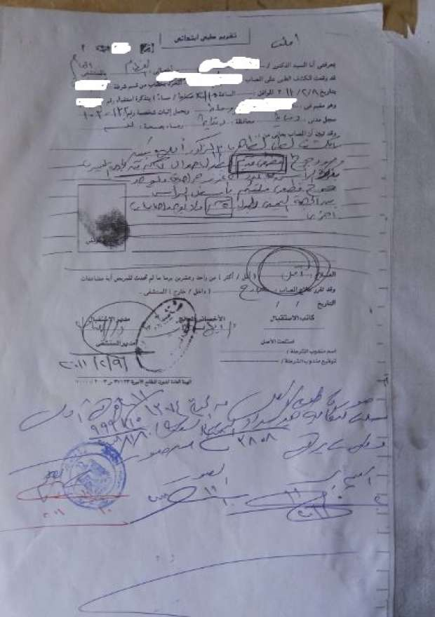
تقرير طبي
واجهنا عطية ببيان شمل أربعة أسماء، هو من بينها، أرسلته باينسيه عصمت الأمين الأسبق للمجلس القومي في نهاية عام 2012 إلى محافظة دمياط تطلب من المحافظة عدم تكريم الأسماء المذكورة، لأنهم مدعو إصابة وذكرت سبب الادعاء.
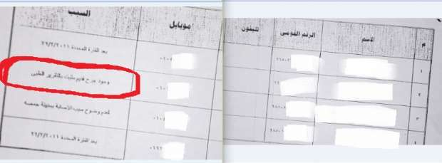البيان الذي ارسلته باينسيه عصمت لمحافظة دمياط
ونفى عطية معرفته بالبيان الذي أرسلته باينسيه عصمت إلى محافظة دمياط وأنهى اللقاء.
متولي عطية حصل على مستحقات بدون وجه حق تمثلت في 5000 جنيه ثم بعد ذلك 2000 جنيه، وخطاب تعيين في هيئة ميناء دمياط.
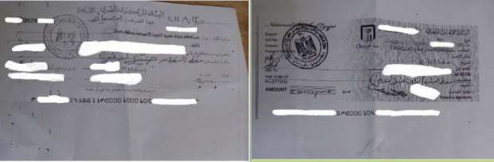
شيكات المبالغ المالية التي صرفت
مواجهة المجلس
لم ينكر سيد أبو بيه الأمين العام للمجلس أنه في ظل ترهل الدولة المصرية عامي 2011 و2012، سجّل مدعو إصابة أنفسهم بالمجلس على أنهم من مصابي الثورة من خلال تقارير طبية مزورة، أو حصلوا عليها من المستشفيات عن طريق تهديد الأطباء والبلطجة.
ويضيف أبو بيه أن المجلس يعيد دراسة ملفات المصابين مع المستشفيات التي صدرت منها التقارير الطبية، ومن يثبت أنه مدعي إصابة أو قام بتزوير تقرير طبي يتم تقديمه للمحاكمة ومطالبته برد المستحقات التي حصل عليها.
اكتشف المجلس - وفق أبو بيه - أن 94 فرداً منهم 37 تقدموا بتقارير طبية مزورة والباقي تقدم بتقارير طبية على أنه مصاب ثورة، وتبين أنه مصاب في مشاجرات، ورفع المجلس دعاوى قضائية ضدهم لمطالبتهم برد المستحقات، وترك الوظائف التي حصلوا عليها بدون وجه حق وما زالت تنظر بالمحاكم.
مصاب لم يحصل على وظيفة
في حين حصل مدعي إصابة على وظيفة، ظل رامي سعيد المصاب بطلق ناري بالقدم يوم 28 يناير 2011 على كوبري قصر النيل يذوق الأمرين في طلب وظيفته منذ أن تسلم خطاب التعيين في عام 2012 وحتى الآن.
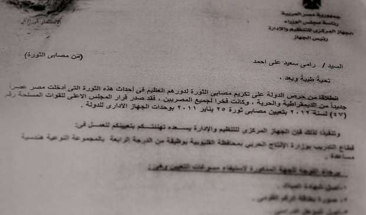
خطاب التعيين
ويضيف سعيد أن تعيينه من المفترض أن يكون في هيئة الإنتاج الحربي بحسب خطاب التعيين، لكنه حين ذهب لاستلام الوظيفة أبلغه موظف الإنتاج الحربي المختص أن أوراقه ما زالت قيد الدراسة. ويقول سعيد إنه خاطب المجلس القومي والتنظيم والإدارة للحصول على الوظيفة لكن دون جدوى.
تجارة الدواء
يقول محمد قرني المصاب بشلل نصفي إثر طلقات نارية بالظهر يوم 28 يناير بميدان الأربعين- محافظة السويس "أنا الدواء بتاعي اللي بصرفه من المجلس ما بخدهوش كامل ومابيكفنيش وبشتري باقي الدواء على حسابي من بره، لأن الصيدلية اللي بيتعامل معاها المجلس بتقولي مفيش دواء يكمل وأنا تعبان من الموضوع ده".
أثناء إنجاز التحقيق، وردت شكاوى تأكدنا منها بعد ذلك من مصابين تحدثنا معهم أن مدعي إصابة ما زالوا مسجلين بالمجلس يقومون بصرف أدوية تزيد عن حاجتهم لبيعها والتجارة فيها أو استبدالها بمستحضرات غسيل الشعر (شامبو) لكون تجارته وبيعه أسهل ويتم ذلك بالتواطؤ مع صيدلية صرف الدواء المتعاقد معها المجلس.
سيد أبو بيه الأمين العام للمجلس حين واجهناه بما ورد إلينا من تجارة بدواء المصابين وأسر الشهداء، كان رده أنه بالفعل هناك تجارة دواء تتم بالتواطؤ مع الصيدلية التي تعاقد معها المجلس، وللأسف كانت صيدلية حكومية وتم إلغاء التعاقد معها، لكنه لم يذكر اسم الصيدلية.
ويضيف أبو بيه أنه اكتشف تواطؤ الصيدلية بعد أن وجد عن طريق الصدفة مصابا يدخل عليه مكتبه ويشكو له من أن الصيدلية تمتنع عن صرف العلاج الكامل له وأنها صرفت لغيره كميات كبيرة من الدواء.
ويضيف أبو بيه أنه حصل على اسم المصاب الذي صرف كميات كبيرة من الدواء من سجلات المجلس وواجه به الصيدلية ليكتشف أن المصاب يقوم شهريا بصرف 60 نوعا من الدواء لأمراض مختلفة بدون وجه حق.
ويضيف أنه تلقى شكاوى أيضا من تواطؤ صيدلية جديدة تم التعاقد معها فأمر بعدم صرف مستحقاتها المالية لدى المجلس بعدما ثبت تلاعبها. وقال إنه على سبيل المثال "ناس صرفت علاج فيروس سي ولما المجلس حلل لها ملقاش عندها فيروس سي".
استهداف روح الثورة
تقول ليلى الحداد محامية تونسية لمصابي وأهالي شهداء الثورة، إن الحكومات المتعاقبة استهدفت روح الثورة وقتلها بسلب المصابين وأسر الشهداء مستحقاتهم حتى يتعلموا جيداً أنه ليس هناك عيش ولا حرية ولا عدالة اجتماعية.
لبنى محرم رئيس جمعية (يهمني الإنسان) المصرية تقول إن غالبية مصابي الثورة تم علاجهم على نفقة الجمعية نظراً لإهمال المجلس القومي علاجهم.
وتضيف لبنى الحداد أن المصابين لا يريدون أن يعرف أحد أنهم مصابو ثورة، فحينما يسألهم أحد عن إصابتهم في حالة كانت الإصابة ظاهرة يدعون أنهم أصيبوا في حادث سيارة أو قطار، لأن الحكومات المتعاقبة علمتهم درساً لن ينسوه، وهو سلب حقوقهم التي كانوا يطالبون بها.
ويكتب التاريخ اليوم انتصاراً لحكومات ما بعد الثورة على من كانوا سبباً في كسر قيود الخوف، ففي تونس ومصر أم ثكلى وزوجة ترملت وأطفال يُتُّموا، ولا يزال مصابو وأسر شهداء الثورتين يطالبون بـ (عيش-حرية-عدالة اجتماعية) حتى لأنفسهم فقط، لكن دون مجيب بعدما انكسرت روح الثورة على حجر الفساد والإهمال وانقلب الحال رأساً على عقب.
ملاحظة: *تعني اسم مستعار
أنجز هذا التحقيق بدعم وإشراف شبكة إعلاميون من أجل صحافة استقصائية (أريج) www.arij.net


{kind=link}
تعليقات الفيسبوك